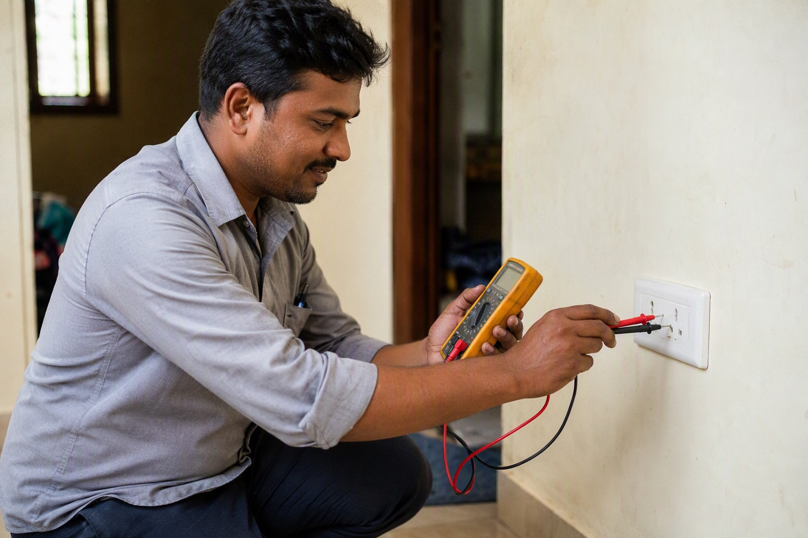

Duplicate Havells Wire: 6 Signs to Check Before Buying

Few electrical brands are asked for by name as often as Havells, and in the counterfeit economy, name recall is raw material. Fake Havells wire exists for one reason: the label sells, and the product hides. Once a coil is drawn through conduits and the walls are painted, the only evidence of what you actually bought is the bill — if you took one. The brand itself is the biggest victim here; every fake coil that fails damages a reputation Havells spent decades building.
Six signs to check
- 1. Printing along the wire. Genuine wire is printed at regular intervals with the Havells name, the conductor size in sq mm and the ISI or standards marking. On fakes this print is often faint, uneven or oddly spaced.
- 2. Sequential metre marking. Draw out a few metres; the numbers must increase in order. Repeats and jumps expose both fakes and short-length coils.
- 3. Packaging print quality. Compare the carton against one you know is genuine: sharpness of the logo, colour shade, spelling in the fine print. Counterfeit printing is rarely perfect.
- 4. Brand verification features. Where Havells provides a QR code, hologram or scratch-based verification on the pack, use it before paying. Refuse explanations for why it "cannot be checked today".
- 5. Copper condition. Bright, uniform strands at the cut end. Dull or greyish copper is a walk-away signal.
- 6. Coil winding. Factory winding is tight and even. Loose, untidy coils suggest rewinding or tampering.
The two tests that need no expertise
Price: electrical distribution is a 3 to 5 percent margin business. A genuine seller cannot quote far below market and survive, so a steal price on Havells wire is the classic duplicate signature. Compare two or three shops and be wary of the outlier, not grateful to it.
Channel: buy from authorised dealers, ask to see the authorisation certificate, and insist on a GST bill that names Havells and the exact item. The bill is what stands between you and an unclaimable warranty. For the general method, see original vs duplicate electrical products.
Cross-check the price with Mount Cable
Mount Cable does not stock Havells, so we have no horse in this race — which makes us a useful referee. WhatsApp your full wire list to +91 88676 76700 and within 60 minutes we will tell you what it should cost at genuine market levels, and can arrange equivalent options from brands we do distribute, including Finolex, Polycab, RR Kabel, KEI and V-Guard. If the quote in your hand is far below that reference, walk away. Related reading: how to identify original Finolex wire and our quote page.
Frequently asked questions
How do I identify duplicate Havells wire?
Why are popular wire brands copied so often?
Does a shop's size or appearance indicate genuineness?
How do I verify at my site rather than at the shop?
What happens if I have already installed suspect wire?
Ready to order for your home?
Upload your wiring list for an instant quote — 100% original material, free next-day delivery across Bangalore.